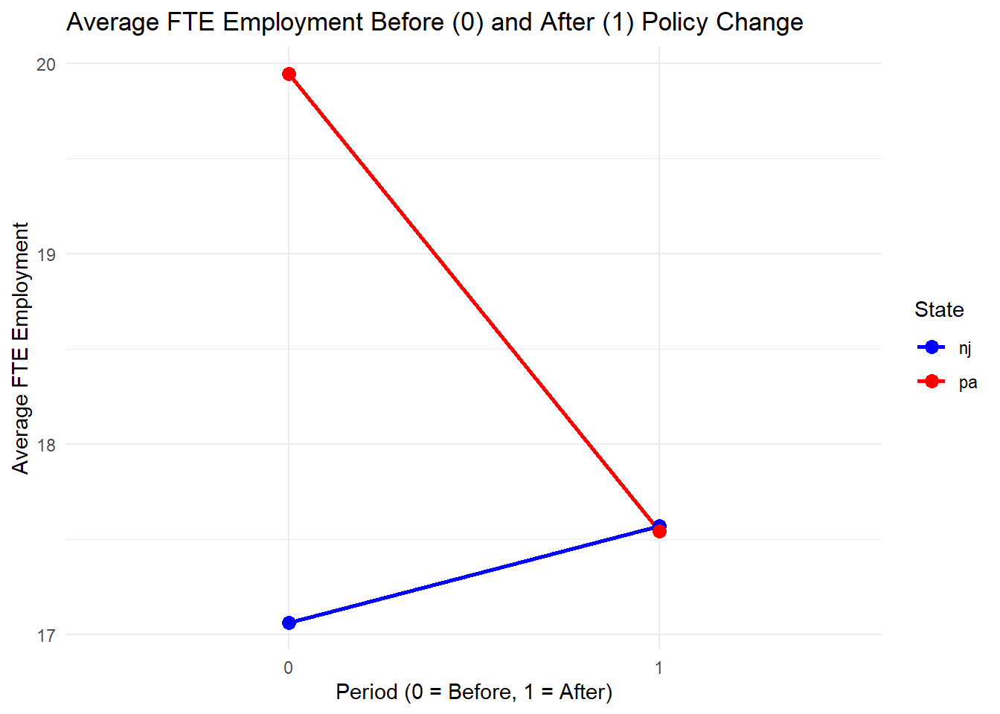

library(pacman)
pacman::p_load(
tidyverse, # For data manipulation (dplyr, tidyr) and plotting (ggplot2)
readxl, # For reading Excel files
fixest, # For fast fixed-effects regression (feols)
skimr,
modelsummary, # For creating regression tables (alternative to stargazer)
ggplot2, # For plotting
knitr # For knitting the notebook and kable tables
)
path = "D:/analysis/Econometrics/project/card_kruger/"
# nice tables
nice_table <- function(x, ...) {
knitr::kable(x, digits = 3, ...)
}
theme_set(theme_minimal())
# windows()Extra References: - https://arxiv.org/abs/2108.05858
We have selected a dataset from the Econometrics Dataset Package from the various datasets listed here.
A classic example for DiD analysis is the study by Card and Krueger (1994) on the impact of minimum wage increases on employment in the fast-food industry. This study utilized data from fast-food restaurants in New Jersey and Pennsylvania.
# load the dataset
#function to read excel
raw_dat <- read.csv(file.path(path,'data/fast-food-data.csv'))The CardKrueger1994 dataset includes information on employment, wages, and other characteristics of fast-food restaurants before and after the minimum wage increase in New Jersey, with Pennsylvania serving as a control group. Familiarize yourself with the dataset by examining its structure and summary statistics
# summary(df)
str(raw_dat)'data.frame': 410 obs. of 47 variables:
$ X : int 1 2 3 4 5 6 7 8 9 10 ...
$ sheet : int 46 49 506 56 61 62 445 451 455 458 ...
$ chain : int 1 2 2 4 4 4 1 1 2 2 ...
$ co_owned: int 0 0 1 1 1 1 0 0 1 1 ...
$ state : chr "pa" "pa" "pa" "pa" ...
$ southj : int 0 0 0 0 0 0 0 0 0 0 ...
$ centralj: int 0 0 0 0 0 0 0 0 0 0 ...
$ northj : int 0 0 0 0 0 0 0 0 0 0 ...
$ pa1 : int 1 1 1 1 1 1 0 0 0 1 ...
$ pa2 : int 0 0 0 0 0 0 1 1 1 0 ...
$ shore : int 0 0 0 0 0 0 0 0 0 0 ...
$ ncalls : int 0 0 0 0 0 2 0 0 0 2 ...
$ empft : num 30 6.5 3 20 6 0 50 10 2 2 ...
$ emppt : num 15 6.5 7 20 26 31 35 17 8 10 ...
$ nmgrs : num 3 4 2 4 5 5 3 5 5 2 ...
$ wage_st : num NA NA NA 5 5.5 5 5 5 5.25 5 ...
$ inctime : num 19 26 13 26 52 26 26 52 13 19 ...
$ firstinc: num NA NA 0.37 0.1 0.15 0.07 0.1 0.25 0.25 0.15 ...
$ bonus : int 1 0 0 1 1 0 0 0 0 0 ...
$ pctaff : num NA NA 30 0 0 45 0 0 0 0 ...
$ meals : int 2 2 2 2 3 2 2 2 1 1 ...
$ open : num 6.5 10 11 10 10 10 6 0 11 11 ...
$ hrsopen : num 16.5 13 10 12 12 12 18 24 10 10 ...
$ psoda : num 1.03 1.01 0.95 0.87 0.87 0.87 1.04 1.05 0.73 0.94 ...
$ pfry : num 1.03 0.9 0.74 0.82 0.77 0.77 0.88 0.84 0.73 0.73 ...
$ pentree : num 0.52 2.35 2.33 1.79 1.65 0.95 0.94 0.96 2.32 2.32 ...
$ nregs : int 3 4 3 2 2 2 3 6 2 4 ...
$ nregs11 : int 3 3 3 2 2 2 3 4 2 4 ...
$ type2 : int 1 1 1 1 1 1 1 1 1 1 ...
$ status2 : int 1 1 1 1 1 1 1 1 1 1 ...
$ date2 : int 111792 111292 111292 111492 111492 111492 110792 111792 111292 111792 ...
$ ncalls2 : int 1 NA NA NA NA NA NA 2 NA 1 ...
$ empft2 : num 3.5 0 3 0 28 NA 15 26 3 2 ...
$ emppt2 : num 35 15 7 36 3 NA 18 9 12 9 ...
$ nmgrs2 : num 3 4 4 2 6 NA 5 6 2 2 ...
$ wage_st2: num 4.3 4.45 5 5.25 4.75 NA 4.75 5 5 5 ...
$ inctime2: int 26 13 19 26 13 26 26 26 13 13 ...
$ firstin2: num 0.08 0.05 0.25 0.15 0.15 NA 0.15 0.2 0.25 0.25 ...
$ special2: int 1 0 NA 0 0 0 0 0 0 0 ...
$ meals2 : int 2 2 1 2 2 2 2 2 2 1 ...
$ open2r : num 6.5 10 11 10 10 10 6 0 11 11 ...
$ hrsopen2: num 16.5 13 11 12 12 12 18 24 11 10.5 ...
$ psoda2 : num 1.03 1.01 0.95 0.92 1.01 NA 1.04 1.11 0.94 0.9 ...
$ pfry2 : num NA 0.89 0.74 0.79 0.84 0.84 0.86 0.84 0.84 0.73 ...
$ pentree2: num 0.94 2.35 2.33 0.87 0.95 1.79 0.94 0.94 2.32 2.32 ...
$ nregs2 : int 4 4 4 2 2 3 3 6 4 4 ...
$ nregs112: int 4 4 3 2 2 3 3 3 3 3 ...Cleaning
# endregion endregion Reshape data from wide to long format
# Stores measured before the wage change (wave 1) will have post = 0
# Stores measured after the wage change (wave 2) will have post = 1
#endregion Select wave 1 variables, rename ID, mark as pre-period (post=0)
df_pre <- raw_dat %>%
select(
store_id = X,
chain, state, co_owned, starts_with("empft"), starts_with("emppt"),
starts_with("nmgrs"), starts_with("wage_st")
# Add any other time-varying controls if needed
) %>%
select(-ends_with("2")) %>% # Remove any accidentally included wave 2 vars
mutate(post = 0)
#Select wave 2 variables, rename ID and wave 2 variables, mark as post-period (post=1)
df_post <- raw_dat %>%
select(
store_id = X,
chain, state, co_owned, ends_with("2") # Select ID, time-invariant vars, and wave 2 vars
) %>%
rename_with(~ gsub("2$", "", .x), ends_with("2")) %>% # Remove '2' suffix
mutate(post = 1)
# Combine pre and post dataframes
long_df <- bind_rows(df_pre, df_post)df <- long_df %>%
mutate(
empft = as.numeric(empft),
emppt = as.numeric(emppt),
wage_st = as.numeric(wage_st),
nmgrs = as.numeric(nmgrs),
# Total Full Time Employment
emp_total = empft + (0.5 * emppt),
treatment = ifelse(state == "nj", 1, 0),
chain = factor(chain),
state = factor(state)
) %>%
select(
store_id, treatment, post, state, chain, co_owned,
empft, emppt, emp_total, wage_st, nmgrs
) %>%
arrange(store_id, post)print("Structure of final long dataset")[1] "Structure of final long dataset"str(df)'data.frame': 820 obs. of 11 variables:
$ store_id : int 1 1 2 2 3 3 4 4 5 5 ...
$ treatment: num 0 0 0 0 0 0 0 0 0 0 ...
$ post : num 0 1 0 1 0 1 0 1 0 1 ...
$ state : Factor w/ 2 levels "nj","pa": 2 2 2 2 2 2 2 2 2 2 ...
$ chain : Factor w/ 4 levels "1","2","3","4": 1 1 2 2 2 2 4 4 4 4 ...
$ co_owned : int 0 0 0 0 1 1 1 1 1 1 ...
$ empft : num 30 3.5 6.5 0 3 3 20 0 6 28 ...
$ emppt : num 15 35 6.5 15 7 7 20 36 26 3 ...
$ emp_total: num 37.5 21 9.75 7.5 6.5 6.5 30 18 19 29.5 ...
$ wage_st : num NA 4.3 NA 4.45 NA 5 5 5.25 5.5 4.75 ...
$ nmgrs : num 3 3 4 4 2 4 4 2 5 6 ...Defining Treatment and Control Groups
print("Summary of Final Long Dataset")[1] "Summary of Final Long Dataset"# summary(df) %>% nice_table()
skim(df %>% select(-store_id)) %>%
filter(skim_type == "numeric") %>%
rename(variable = "skim_variable", missing = "n_missing", ) %>%
rename_with(~ gsub("^numeric.", "", .x), starts_with("numeric.")) %>% # Remove '2' suffix
select(variable, missing, mean, sd, p0, p25, p50, p75, p100, hist ) %>%
nice_table()| variable | missing | mean | sd | p0 | p25 | p50 | p75 | p100 | hist |
|---|---|---|---|---|---|---|---|---|---|
| treatment | 0 | 0.807 | 0.395 | 0.00 | 1.0 | 1.0 | 1.00 | 1.00 | ▂▁▁▁▇ |
| post | 0 | 0.500 | 0.500 | 0.00 | 0.0 | 0.5 | 1.00 | 1.00 | ▇▁▁▁▇ |
| co_owned | 0 | 0.344 | 0.475 | 0.00 | 0.0 | 0.0 | 1.00 | 1.00 | ▇▁▁▁▅ |
| empft | 18 | 8.239 | 8.299 | 0.00 | 2.0 | 6.0 | 12.00 | 60.00 | ▇▂▁▁▁ |
| emppt | 14 | 18.755 | 10.387 | 0.00 | 11.0 | 17.0 | 25.00 | 60.00 | ▆▇▅▁▁ |
| emp_total | 19 | 17.595 | 9.023 | 0.00 | 11.5 | 16.5 | 22.00 | 80.00 | ▇▇▁▁▁ |
| wage_st | 41 | 4.806 | 0.358 | 4.25 | 4.5 | 5.0 | 5.05 | 6.25 | ▅▇▁▁▁ |
| nmgrs | 12 | 3.452 | 1.081 | 0.00 | 3.0 | 3.0 | 4.00 | 10.00 | ▂▇▁▁▁ |
Compare means before and after Policy Change
avg_emp_summary <- df %>%
group_by(state, post) %>%
summarise(avg_emp = mean(emp_total, na.rm = TRUE), .groups = 'drop') # Use .groups='drop'plot_title <- "Average FTE Employment Before (0) and After (1) Policy Change"
emp_plot <- ggplot(avg_emp_summary, aes(x = factor(post), y = avg_emp, color = state, group = state)) +
geom_line(linewidth = 1) +
geom_point(size = 3) +
labs(
title = plot_title,
x = "Period (0 = Before, 1 = After)",
y = "Average FTE Employment",
color = "State"
) +
scale_color_manual(values = c("nj" = "blue", "pa" = "red")) # Assign colors
print(emp_plot)
Running the DiD Model
# Model 1: Basic DiD
# Y = emp_total
# treatment = 1 if NJ, 0 if PA
# post = 1 if after policy, 0 if before
# Interaction term `treatment:post` captures the DiD effect
m1_basic_did <- feols(emp_total ~ treatment * post, data = df)NOTE: 19 observations removed because of NA values (LHS: 19).# Model 2: DiD with Covariates
# Adding control variables: chain, company ownership, starting wage, num managers
m2_did_cov <- feols(emp_total ~ treatment * post + chain + co_owned + wage_st + nmgrs,
data = df)NOTE: 60 observations removed because of NA values (LHS: 19, RHS: 48).# Model 3: DiD with Store Fixed Effects (FE) and Covariates
# Controls for all time-invariant store characteristics
# `treatment` main effect is absorbed by store FE. DiD effect is still `treatment:post`
m3_did_fe <- feols(emp_total ~ treatment * post + chain + co_owned + wage_st + nmgrs | store_id,
data = df)NOTE: 60 observations removed because of NA values (LHS: 19, RHS: 48).The variables 'treatment', 'chain2', 'chain3', 'chain4' and 'co_owned' have been removed because of collinearity (see $collin.var).# Model 4: DiD with Store FE, Covariates, and Clustered Standard Errors (SEs)
# Cluster SEs by state, the level of treatment assignment.
# Be cautious with few clusters (only 2 states).
m4_did_fe_clust <- feols(emp_total ~ treatment * post + chain + co_owned + wage_st + nmgrs | store_id,
data = df,
cluster = ~state)NOTE: 60 observations removed because of NA values (LHS: 19, RHS: 48).The variables 'treatment', 'chain2', 'chain3', 'chain4' and 'co_owned' have been removed because of collinearity (see $collin.var).DiD Model Results
# Display results using modelsummary (modern alternative to stargazer)
# Provides clean tables in various formats (default is console)
models <- list(
"Basic DiD" = m1_basic_did,
"DiD + Cov" = m2_did_cov,
"DiD + Cov + FE" = m3_did_fe,
"DiD + Cov + FE (Clust SE)" = m4_did_fe_clust
# Add m4b_did_fe_clust_store if you ran it
)
# Customize the output: focus on key coefficients, add GOF stats
modelsummary(models,
stars = TRUE, # Add significance stars
coef_map = c("treatment:post" = "NJ x Post (DiD Effect)", # Rename interaction term
"treatment" = "NJ (Treatment)",
"post" = "Post-Policy Period"),
gof_map = c("nobs", "r.squared", "adj.r.squared"), # Goodness-of-fit stats
title = "DiD Estimates of Minimum Wage Effect on FTE Employment")| Basic DiD | DiD + Cov | DiD + Cov + FE | DiD + Cov + FE (Clust SE) | |
|---|---|---|---|---|
| + p < 0.1, * p < 0.05, ** p < 0.01, *** p < 0.001 | ||||
| NJ x Post (DiD Effect) | 2.914+ | 1.331 | 1.188 | 1.188 |
| (1.611) | (1.527) | (1.596) | (1.168) | |
| NJ (Treatment) | -2.884* | -1.772+ | ||
| (1.135) | (1.016) | |||
| Post-Policy Period | -2.407+ | -1.938 | -2.012 | -2.012** |
| (1.446) | (1.298) | (1.392) | (0.005) | |
| Num.Obs. | 801 | 760 | 760 | 760 |
| R2 | 0.008 | 0.248 | 0.793 | 0.793 |
| R2 Adj. | 0.004 | 0.239 | 0.547 | 0.547 |
Interpretation Notes
The coefficient ‘NJ x Post (DiD Effect)’ estimates the average causal effect of the minimum wage increase on FTE employment in New Jersey relative to Pennsylvania
A positive coefficient suggests employment increased more (or decreased less) in NJ relative to PA.
A negative coefficient suggests employment decreased more (or increased less) in NJ relative to PA.
Model 3 (with Store FE) and Model 4 (with Store FE and Clustered SEs) are often preferred as they control for unobserved store-specific characteristics and potential error correlation
Statistical significance (indicated by stars) suggests whether the observed effect is likely different from zero.